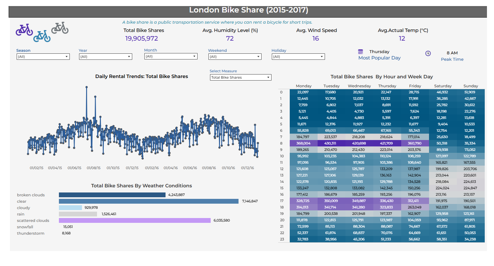

Executive Summary
From 2015 to 2017, London’s bike-share system followed fascinating patterns, influenced by commuters, leisure riders, weather, and time of day. This project reveals behavioral insights and actionable recommendations that drive smarter urban mobility—backed by data.
Project Highlights
- 🗓️ Hourly and daily trend analysis
- 🌦️ Weather impact on ridership behavior
- 📈 Random Forest model for feature importance
- 🛠️ Built with Python, pandas, seaborn, and Tableau
Dashboard Preview
 Explore Dashboard📘 Dashboard User Guide
Click to expand the walkthrough
Global Filters: Season, Year, Month, Holiday, and Weekend all update the dashboard dynamically.
Performance Metrics: Total rides, peak hour, average weather data per selection.
Interactive Trends: Line plots, bar charts, and hourly heatmaps highlight how Londoners travel.
To dig deeper, download the full guide: Dashboard Guide.pdf
📂 Repository & Notebook
Check out the Jupyter notebook, cleaned datasets, and source code:
View GitHub ProjectAbout the Analyst
Hi, I’m Michéle! I’m a data explorer passionate about storytelling, visual insights, and helping cities move smarter. Let’s connect!